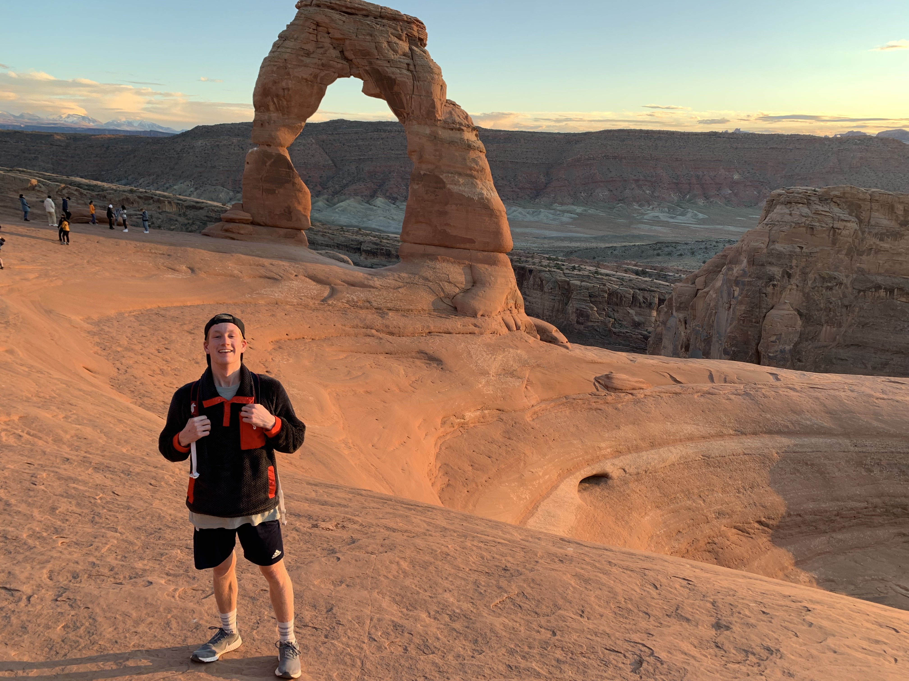

Andrew Chandler
Menu
Home
About Me
Tableau

Accomplishments.
Look below to see my résumé.
Résumé
Education
Brigham Young University | Pre-Marriott School of Business student
Skyline High School
GPA: 3.92/4.00, CPA: 3.8/4.00
ACT composite score 29
National Honor Society Skyline Chapter May 2018 - 2019
Experience
Hungary/România mission, Social media specialist/editor
Edited videos and created content for the church and mission Facebook/Instagram pages
Produced content in ways that provided more reach for the pages
Enabled viewers to develop a connection with our message
Foothill Orthodontics, Orthodontic Assistant
Oversaw proper sterilization of tools and daily preparation of 50-80 patients’ trays
Permitted other assistants to take care of patients and address needs
Jeremy Ranch Country Club, Greeter and cart maintainace
Greeted hundreds of members and guests and ensured the proper care of their carts
Created value for the country club by allowing visitors’ to have a more comfortable golfing experience
Student Governemnt, Sophomore Class President
Lead the sophomore class (approx. 500 students) in many activities over the course of the year
Planned dances, activities, and attended 40+ sporting activities
Fellowshipped sophomores who were new at the high school to integrate and feel involved
Student Government, Student Body Officer - assembly chair
Planned and carried out all school assemblies (around 10)
Utilized fun and interactive activities within the assemblies engaging the student body
Drew more students to assemblies and increased excitement for upcoming events
Special Needs Activity Program (S.N.A.P), Youth Councilor
Led Russell, a developmentally disabled individual, in weekly activities
Formed a life-long friendship and cultivated a greater understanding of patience and collaboration
Skills
Bilingual - fluent Romanian
Eagle Scout - Project: Activity night for homeless children
Joanie Daily Service Scholar - approx. 220 hours of service in: communities, organizations, school, and projects
Holladay Youth City Council
Skyline Men's Tennis Team, Captain - 2017-2019 (captain 2019 season)
Skyline Men's Golf Team - 2018-2019
Freedom Leadership Award - Bonneville Kiwanis Club
Wasatch Warrior Way Service Award - 30 hours of varied service
Number: 801-121-2121
Email: fakeemail@gmail.com
For more info check out my
linkedin